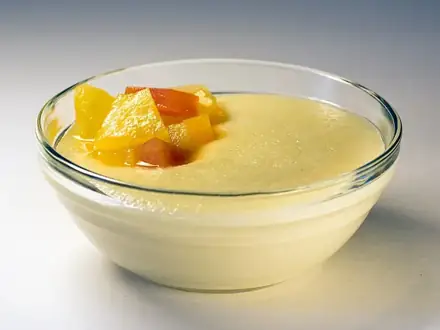
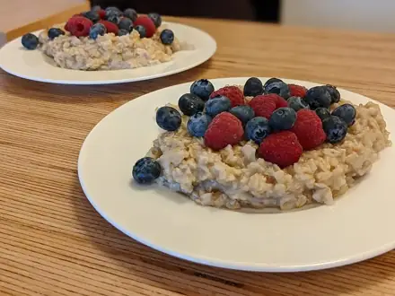

Что приготовить на скорую руку
Блюда до 15 минут из обычных продуктов. 23 рецептов: у каждого время, калории и БЖУ на порцию, пошаговые инструкции и список покупок
 Шоколадный кекс в кружке в микроволновке7 мин · 506 ккал · Б 15 г · Десерт
Шоколадный кекс в кружке в микроволновке7 мин · 506 ккал · Б 15 г · Десерт Яичница-глазунья с помидорами10 мин · 243 ккал · Б 15 г · Завтрак
Яичница-глазунья с помидорами10 мин · 243 ккал · Б 15 г · Завтрак Яйца всмятку и в мешочек10 мин · 173 ккал · Б 14 г · Завтрак
Яйца всмятку и в мешочек10 мин · 173 ккал · Б 14 г · Завтрак
Манная каша10 мин · 307 ккал · Б 10 г · Завтрак Кускус10 мин · 233 ккал · Б 6 г · Гарнир
Кускус10 мин · 233 ккал · Б 6 г · Гарнир Салат из свежих овощей10 мин · 130 ккал · Б 2 г · Салат
Салат из свежих овощей10 мин · 130 ккал · Б 2 г · Салат Морковь с чесноком и сыром10 мин · 279 ккал · Б 11 г · Салат
Морковь с чесноком и сыром10 мин · 279 ккал · Б 11 г · Салат Ачичук10 мин · 41 ккал · Б 2 г · Салат
Ачичук10 мин · 41 ккал · Б 2 г · Салат Творог с зеленью10 мин · 237 ккал · Б 27 г · Закуска
Творог с зеленью10 мин · 237 ккал · Б 27 г · Закуска
Овсяная каша на молоке12 мин · 347 ккал · Б 12 г · Завтрак Овсяноблин15 мин · 339 ккал · Б 18 г · Завтрак
Овсяноблин15 мин · 339 ккал · Б 18 г · Завтрак Гренки сладкие15 мин · 279 ккал · Б 9 г · Завтрак
Гренки сладкие15 мин · 279 ккал · Б 9 г · Завтрак Бутерброды с авокадо и яйцом15 мин · 351 ккал · Б 13 г · Завтрак
Бутерброды с авокадо и яйцом15 мин · 351 ккал · Б 13 г · Завтрак Банановые панкейки из трёх продуктов15 мин · 294 ккал · Б 11 г · Завтрак
Банановые панкейки из трёх продуктов15 мин · 294 ккал · Б 11 г · Завтрак Творожный десерт с ягодами без выпечки15 мин · 204 ккал · Б 21 г · Десерт
Творожный десерт с ягодами без выпечки15 мин · 204 ккал · Б 21 г · Десерт Креветки с чесноком15 мин · 295 ккал · Б 32 г · Второе блюдо
Креветки с чесноком15 мин · 295 ккал · Б 32 г · Второе блюдо Греческий салат15 мин · 353 ккал · Б 12 г · Салат
Греческий салат15 мин · 353 ккал · Б 12 г · Салат Лаваш-ролл с сыром и зеленью15 мин · 332 ккал · Б 13 г · Закуска
Лаваш-ролл с сыром и зеленью15 мин · 332 ккал · Б 13 г · Закуска Мацебрай15 мин · 368 ккал · Б 15 г · Завтрак
Мацебрай15 мин · 368 ккал · Б 15 г · Завтрак Салат с тунцом и фасолью15 мин · 220 ккал · Б 21 г · Салат
Салат с тунцом и фасолью15 мин · 220 ккал · Б 21 г · Салат Омлет с курицей15 мин · 361 ккал · Б 34 г · Завтрак
Омлет с курицей15 мин · 361 ккал · Б 34 г · Завтрак- Гренки из чёрствого хлеба с чесноком15 мин · 317 ккал · Б 6 г · Закуска
 Омлет с остатками овощей15 мин · 361 ккал · Б 18 г · Завтрак
Омлет с остатками овощей15 мин · 361 ккал · Б 18 г · Завтрак
Другие подборки
- Что приготовить из курицы
- Что приготовить из фарша
- Что приготовить из мяса
- Что приготовить из рыбы
- Что приготовить из картошки
- Что приготовить из яиц
- Что приготовить из творога
- Что приготовить из кабачков
- Что приготовить из капусты
- Что приготовить из грибов
- Что приготовить из риса
- Что приготовить из макарон
- Что приготовить из гречки
- Быстрый ужин за 30 минут
- Быстрый завтрак за 20 минут
- ПП-рецепты: лёгкие блюда до 400 ккал
- Белковые блюда: от 25 г белка на порцию
- Дешёвые рецепты из простых продуктов
- Что приготовить ребёнку
- Постные блюда
- Блюда на пару
- Что приготовить в духовке
- Простые супы
- Простые салаты
- Выпечка и десерты
- Блюда на праздничный стол
- Что приготовить из остатков